In-App Analytics ¶
- Introduction
- Performance Analytics
- The funnel: KPIs
- Timeline
- Conversion Time
- Conversion Time Average
- Conversion vs. Abandonment
- Submissions Analytics
- Timeline
- Sessions before submission
- By country
- Top cities
- Submissions by hour
- Top referrers
- By type referrer
- By device category
- By OS
- By Browser
- Is Mobile?
- Interacting with In-App Analytics
- Enable / Disable In-App Analytics
- Enable / Disable In-App Analytics on the fly
- Advanced Settings
Introduction ¶
Want to know how well are your forms performing? Well, now you can do it fast and easy with the Easy Forms' In-App Analytics. Get the best results from your forms, improve them to increase your conversion rates and much more. Yes, with only a few steps, you can start tracking your forms and in real time! Try it now and see the difference!
In-App Analytics offers two kinds of reports, each with a different approach:
- Performance Analytics
- Submissions Analytics
Performance Analytics ¶
The Performance Analytics report let you measure how effective is your form in converting inbound visitors.
The funnel: KPIs ¶
The funnel in this report represents how many visitors make it to the next conversion stage.
Users: Visitors who landed on the Form.
The first step in the funnel is the number of unique users that landed on the form. This number represents the total amount of people that saw the form and serves as a baseline for the rest of the funnel steps.
Began Filling: Users who interacted with the Form.
The next step in the funnel shows how many unique users have interacted with the form beside the users that saw your page.
An interaction will be considered an action with any of the input fields in the form (attempting to fill them out, change them, or any other). This funnel step tells you how many people made some effort to fill out this form, but weren't able to make it through to the next step (a successful conversion).
We recommend looking at this segment very closely, because the visitor that have made it to this step, but not to the next; have displayed interest in the form but due to confusion, form validation errors, or other reasons, decided not to go any further.
Conversions: Users Converted Successfully
This number represents the unique users that successfully converted the form by completing every stage of the funnel.
Conversion Rate: This is the average number of conversions per users, shown as a percentage.
Timeline ¶
{kind=link}
The Timeline represents the evolution of the first three indicators mentioned above through the time.
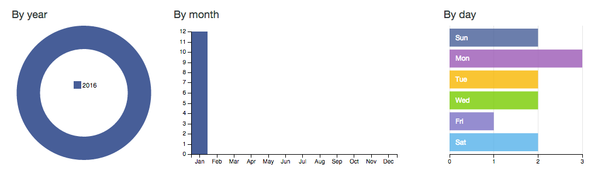
These three graphs grouped the number of users, interactions and conversions in that time unit. For example, at a glance we can know that on Mondays we have more conversions than on Fridays.
Conversion Time ¶
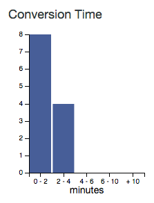
The Conversion Time chart shows how much time your average users are spending filling out your form.
Conversion Time Average ¶
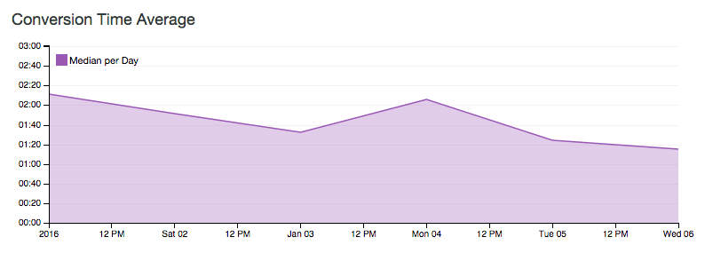
The Conversion Time Average chart shows the average time per day that users are spending filling out your form.
Conversion vs. Abandonment ¶
This chart makes a comparison between the number of conversions and the number of abandonments.
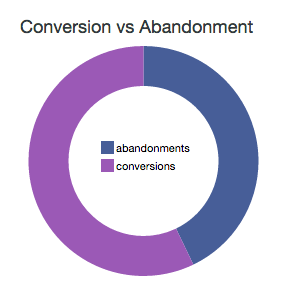
Abandonments: This rate represents the number of unique users that interacted with the form (start filling it) but, for one reason or another, didn't send it.
Abandonment Rate
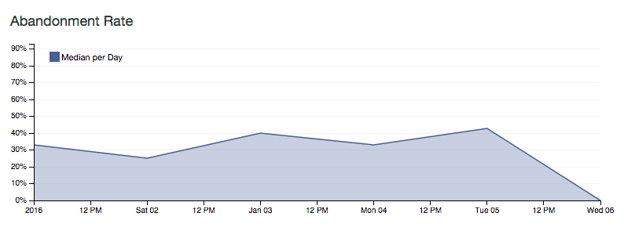
This chart shows you the percentage of abandonments in the course of time.
Abandonment Rate: This is the average number of abandonments per users, shown as a percentage.
Submissions Analytics ¶
Unlike the previous report, the Submissions Analytics report focuses on submissions and for example, let you know at a glance the number of submissions that are made in time, how many sessions are performed by your users to submit the form or which country and city have made more submissions.
Timeline ¶
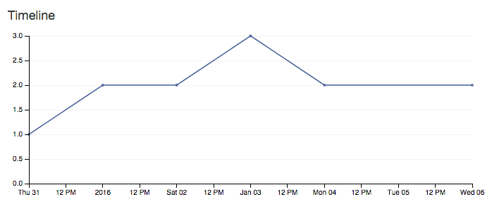
With the Timeline you can see how many submissions are made each day.
Sessions before submission ¶
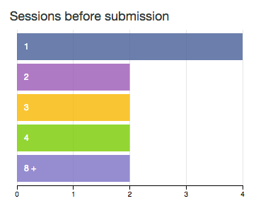
Each time a user visits a site, Easy Forms sets a session counter: Set to 1 on the user’s first visit, 2 on the user’s second visit, etc. So with this chart you'll know the average number of visits by users before sending the form. This KPI will help you better understand the behavior of your users
By country ¶
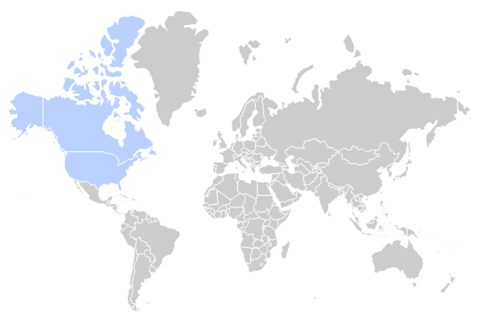
One of the coolest features of In-App Analytics system is that it can show you a geographic map of your form's submissions. Geographic maps can help determine top markets, the effectiveness of offline Campaigns, where to target special offers and advertisements, and more.
This chart will show you a world map with each country with a shade of blue. For example, some countries (like the USA and Canada) will have a dark shade of blue, which indicates that these are your most important countries in terms of submissions. Other countries may not have any shading at all, which indicates you’ve likely never had a submission from that country.
Top cities ¶
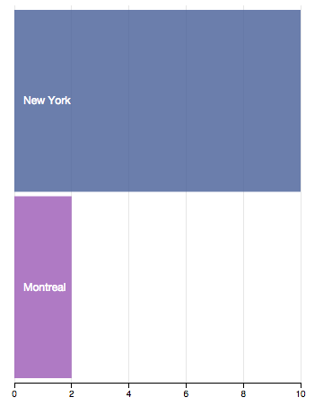
Next to the World Map is this Row chart listing the major cities where users have made a submission, as the number of submissions made in each.
Submissions by hour ¶
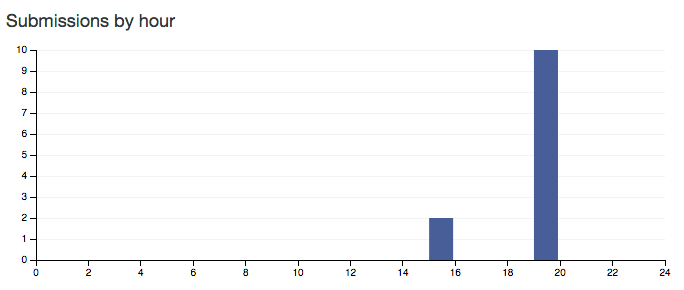
With this chart you can know in what time of the day are made more submissions. Some websites will experience peaks of traffic through the day depending on the content they publish and the audience they target. For example, a children’s website will be quiet at night, while a B2B website will be much busier during business hours.
Note: This chart complements the Performance Analytics' charts (By Year, By Month, By day).
Top referrers ¶
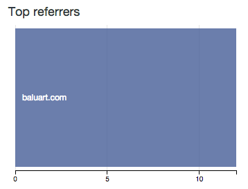
With this chart you will see the main domains that send traffic to your form, listed by number of submissions.
By type referrer ¶
With this chart you can see the number of submissions segmented by the type of reference from which the user came.
Types:
- search
- social
- internal
- unknown
- invalid
By device category ¶
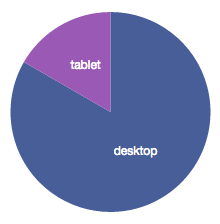
With this chart you can see the number of submissions according to the device categories from which was made.
Categories:
- desktop
- smartphone
- tablet
- feature phone
- console
- TV
- Car browser
- Smart Display
- camera
- portable media player
- phablet
By OS ¶
With this chart you can see the number of submissions segmented by the type of operating system.
By Browser ¶
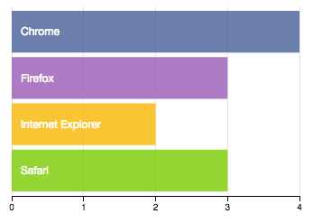
With this chart you can see the number of submissions segmented by the Navigator.
Is Mobile? ¶
With this chart you can quickly determine the number of submissions made from a mobile device or not.
Interacting with In-App Analytics ¶
Keep in mind that the In-App Analytics Charts are naturally data driven and reactive, therefore providing instant feedback on user's interaction.
Just click on one of the charts and the rest of them will show the segment reporting.
For example, on the Performance Analytics report click on Monday ('Sun') and you will see how the other charts update their data, including the funnel where you can see the number of users, interactions and conversions performed on Mondays.
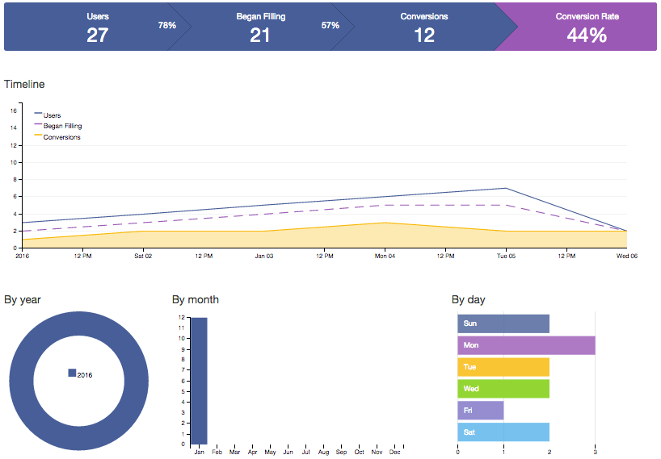
Enable / Disable In-App Analytics ¶
Most of the time, you won't have to do anything to enable form analytics. When a form is created the option to track their performance is enabled.
To disable a form tracking, you must follow these steps:
- Go to the Form Manager.
- Click the Actions button of the Form and then Settings
- Change Analytics from On to Off or vice versa.
- Click Save.
Enable / Disable In-App Analytics on the fly ¶
Depending on the requirements of your site, you may be interested to track your form when certain conditions are met. For these cases you can enable / disable in-app analytics on the fly by adding the configuration option record to the embed code you use to publish the form in your website.
For disable:
‘record’: 0,
For enable:
‘record’: 1,
This parameter is enabled by default.
Note: You can read more details in the Form Widget documentation.
Advanced Settings ¶
How often should statistics be computed? ¶
In-App Analytics is updated once a day, so you will see the stats until yesterday. We decided this because multiple queries are made to the database in order to upgrade the data and this could degrade the application's performance (especially in sites with high traffic). However, this can be configured easily.
For example, follow these steps:
- Open the
@app/config/params.phpfile. - Change App.Analytics.cronExpression value of @daily by
@hourlyor* * * * * - Save the file
With this change, the stats will be updated every hour or every minute.
Note: Remember, it's important to properly configure your server's cron.